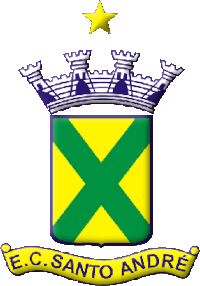

Cidade onde vivo:
Passei minha vida inteira em Santo André, apesar de ter nascido em SBC.

Hobbies:
- Jogos on-line
- Vôlei
- Natação
- Programação


Onde estudei:

Essa foi a escola onde estudei desde o meu sexto ano até minha formação no terceiro do médio.
Minhas redes sociais:
Canal que me inspirou à buscar a programação como profissão:
← Foi com esse canal que conheci o Python e agora estou vendo HTML e CSS.